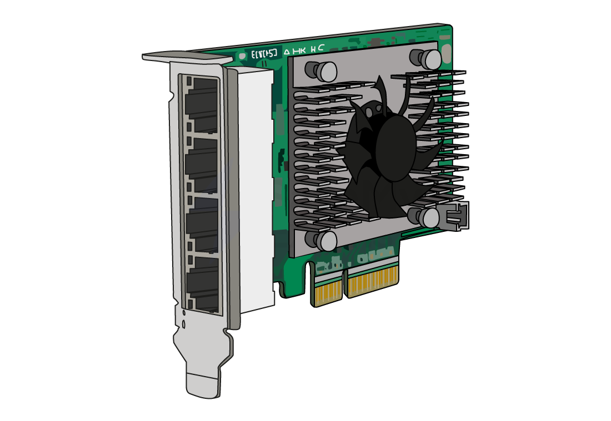

Network Interface Card (NIC)
Local Area Network Hardware: Network Interface Card (NIC)
- Network hardware is a selection of essential components that enable the connectivity and communication of devices within computer networks
- Networks use a variety of hardware to function, some of which include:
- Router
- Wireless access point (WAP)
- Switch
- Transmission media
- Network interface card (NIC)
- The exam requires you to understand the purpose of the network interface card (NIC)
What is a network interface card (NIC)?
- The Network Interface Card (NIC) is required for a computer to connect to a network
- A NIC can be both wired and wireless and allows your computer to send and receive data over a network

MAC Addresses & IP Addresses
MAC Address
What is a MAC address?
- Devices on a network send and receive data, a device needs an address to ensure it sends data to the correct place
- There are two types of network address systems:
- MAC Address
- IP Address
MAC Addresses
What is a MAC address?
- A MAC (Media Access Control) address is a unique identifier given to devices which communicate over a local area network (LAN)
- A network interface card is given a MAC address at the point of manufacture
- MAC addresses are static, meaning they can never change
- MAC addresses make it possible for switches to efficiently forward data to the intended recipient
- Any device that contains a Network Interface Card (NIC) has a MAC address assigned during manufacturing
- A device connecting to a local network already has a MAC address, if it moves to a different network then the MAC address will stay the same
- A MAC address is represented as 12 hexadecimal digits (48 bits), usually grouped in pairs
- The first three pairs are the manufacturer ID number (OUI) and the last three pairs are the serial number of the network interface card (NIC)
- There are enough unique MAC addresses for roughly 281 trillion devices
IP Addresses
What is an IP address?
- An IP (Internet Protocol) address is a unique identifier given to devices which communicate over the Internet (WAN)
- IP addresses can be static, meaning they stay the same or dynamic, meaning they can change
- Static IP addresses are commonly used for servers and websites so they can always be found at the same address
- Dynamic IP addresses are assigned automatically by a DHCP server (Dynamic Host Configuration Protocol)
- IP addresses make it possible to deliver data to the right device
- A device connecting to a network will be given an IP address, if it moves to a different network then the IP address will change
IPv4
- Internet Protocol version 4 is represented as 4 blocks of denary numbers between 0 and 255, separated by full stops
- Each block is one byte (8 bits), each address is 4 bytes (32 bits)
- IPv4 provides over 4 billion unique addresses (2 32), however, with over 7 billion people and countless devices per person, a solution was needed
IPv6
- Internet Protocol version 6 is represented as 8 blocks of 4 hexadecimal digits, separated by colons
- Each block is 2 bytes (16 bits), each address is 16 bytes (128 bits)
- IPv6 could provide over one billion unique addresses for every person on the planet (2 128)
Computers in a network can be identified using both IP addresses and MAC addresses.
Describe two differences between IP addresses and MAC addresses [2]
Answer
- IP address is dynamic/can change // MAC address is static/cannot change
- IP address is used to communicate on a WAN/Internet // MAC address is used to communicate on a LAN
Router
What is a router?
- The router is responsible for routing data packets between different networks
- An example of data the router can direct is, sending internet traffic to the correct destination/devices in your home network
- The router connects networks together, local area networks (LAN) to the wider internet which is a type of wide area network (WAN)
- The router can manage and prioritise data traffic, which can help to keep connections stable
- The router will assign IP addresses to the devices on the network
Image of a router

Image of how a router connects LANs to other networks
State 3 tasks carried out by a router [3]
To answer the question you must simply identify 3 tasks a router does
1 mark each to max 3 e.g.